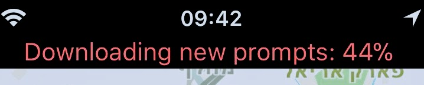
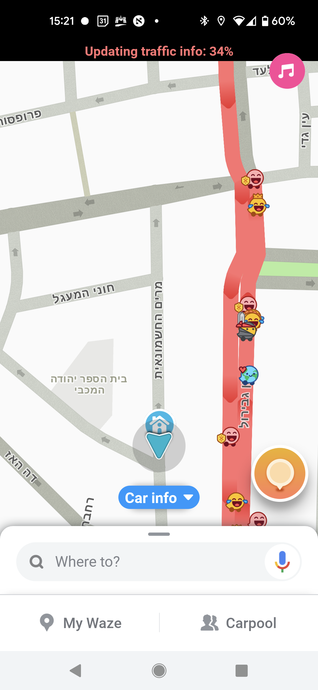
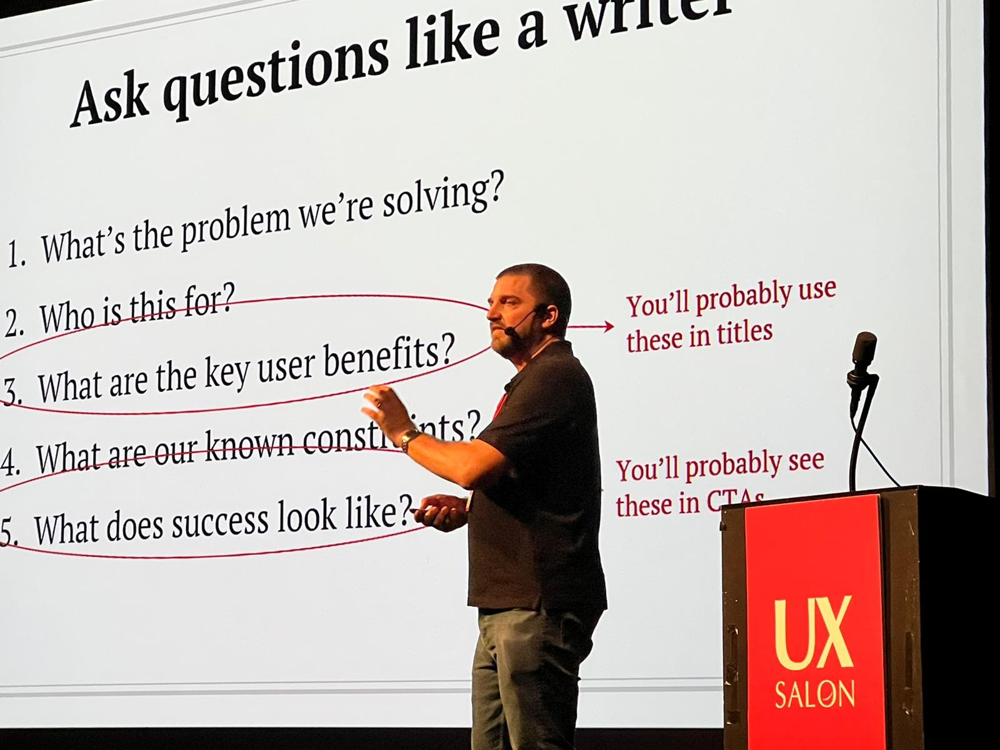

Making life easier,
for everyone
It's a lofty goal, but one I aim to achieve every day.
Whether it's making "scary" aspects of a product more accessible, or building tools for other writers to be more efficient and effective, my goal is the same.
Unexpected content strategy
Focusing on key flows is obvious. Check out these examples that highlight content strategy where you least expect to find it (and where it can help users the most).

Warning messages
A warning in bright red text? That looks scary.
Now it's a helpful reminder of the power of Waze.

Easy invoicing
Taxes, revenues, payment methods: words that can strike fear into any small business owner's heart.
Or at least they used to.

Spoken, not read
Content strategy developed to be heard, not read.
Making life easier for writers
Using my coding skills, I've created tools at Google to help UX writers research, audit, and share their work.
.png)
Research
How do you make sure your word list is relevant?
Create a script that analyzes large bodies of text to analyze.

UXW Scorecards
Giving writers and stakeholders an easy way to understand the impact of UX writing.
Spreading the word about
UX writing
UX conferences, panels, and more —
I've spoken about UX writing at any place that'll have me.

"How to win friends and influence design"
Booking.com UX Writing Meetup
December 16, 2019
Eureka! You just had a brilliant idea about how to design your product, but what now? Sometimes ideas are the easy part, the real challenge is getting others to act on them. In this presentation, Yossi Nachemi explores techniques that UXers of all disciplines can use to influence product design (while making a few friends along the way).
1-page summary
"Metrics for skeptics"
UX Writing Conference
October 6, 2021
What is good UX writing? How can UX Writers find and use data to help make copy decisions? In this presentation, you'll get practical tips you can use in your everyday work, like:
• Understanding which data is actually useful
• Learning different ways to collect it
• Interpreting data to make decisions
If you're looking for ways to interject a little data into your decision-making, this presentation is for you.

"No writer? No problem!"
UX Salon 2022
October 23, 2022
Words are the foundation blocks of design. In this presentation, Yossi Nachemi will take you through some of the professional tricks of the trade for UX Writing. You will learn about where to find inspiration, what tools can be useful, and how to select the right word choices. Think of it as a sort of first aid course for writing when you are lost for words.
1-page summary